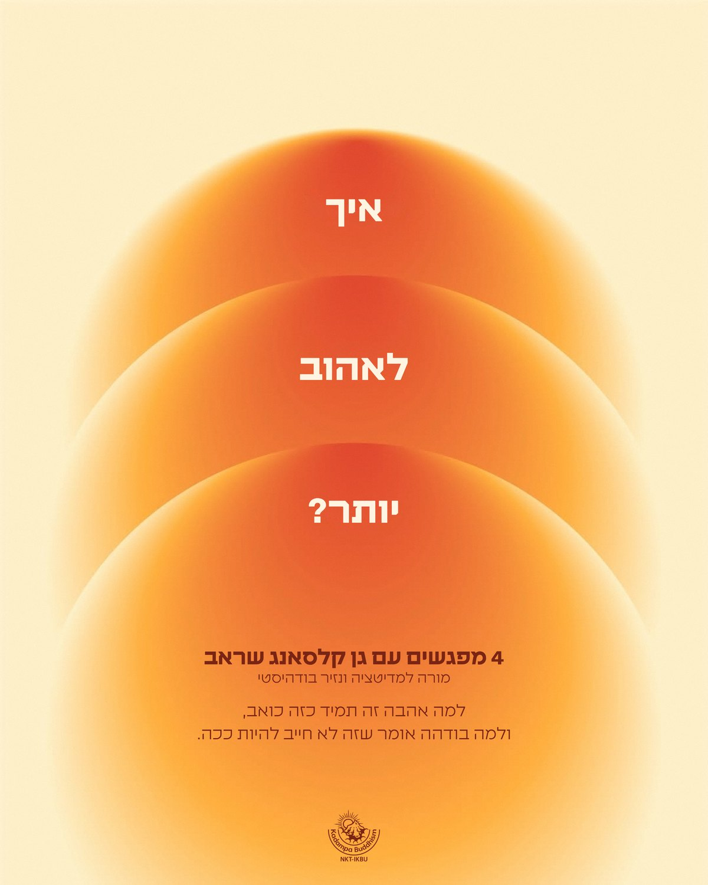

בודהיזם מודרני
לחיי היומיום
מדיטציה וחוכמה בודהיסטית בדרך פרקטית, לכל אחד ואחת, בכל גיל ובכל מקום בארץ.
דרך פרקטית לחוכמה בודהיסטית
הבודהיזם המודרני של קדמפה הוא דרך פרקטית ליישם את הדרך הבודהיסטית בחיי היומיום המודרניים שלנו.
גשה קלסאנג גיאטסו רינפושה
מסורת קדמפה החדשה, שהובאה למערב בשנות ה־70 על ידי המאסטר הנזיר הבודהיסטי גשה קלסאנג גיאטסו רינפושה, מביאה את החוכמה הבודהיסטית לעולם המודרני ומראה איך תרגול מדיטציה בודהיסטית יכול להשתלב בחיינו העסוקים, לא משנה מאיפה בעולם או בני כמה אנחנו.
מסורת קדמפה החדשה הגיעה לארץ ב־2019. דרך מגפות ומלחמות, קבוצות של תלמידים למדו ותרגלו, ואפילו ללא מרכז מדיטציה מוסדר מצאו מקלט בלימודיו של בודהה.
כיום, הנזיר והמורה הישראלי גן קלסאנג שראב שנמצא בסקוטלנד מעביר שיעורים שבועיים בזום, ומגיע להעביר שיעורים פיזיים ברחבי הארץ כל שישה שבועות.
במקביל, ישנו מאמץ להקמת מרכז קדמפה פיזי ראשון בארץ.

אהבה עמוקה
איך לפתוח את הלב?
4 מפגשים עם גן קלסאנג שראב. למה אהבה זה תמיד כזה כואב, ולמה בודהה אומר שזה לא חייב להיות ככה.
- יום א׳ · 1.11איך להבין את עצמנו?
- יום א׳ · 8.11איך לראות את האחר, חלק 1
- יום א׳ · 15.11איך לראות את האחר, חלק 2
- יום א׳ · 22.11ענווה: המענה לחוסר ביטחון
דצמבר 2026
בין ה־17 ל־27 בדצמבר גן קלסאנג שראב מגיע להעביר שיעורים בכל הארץ. פרטים נוספים בקרוב.
עדכונים על שיעורים, סדרות וריטריטים
כל העדכונים מגיעים קודם לקבוצת הווטסאפ שלנו.
הצטרפו לקבוצת הווטסאפ